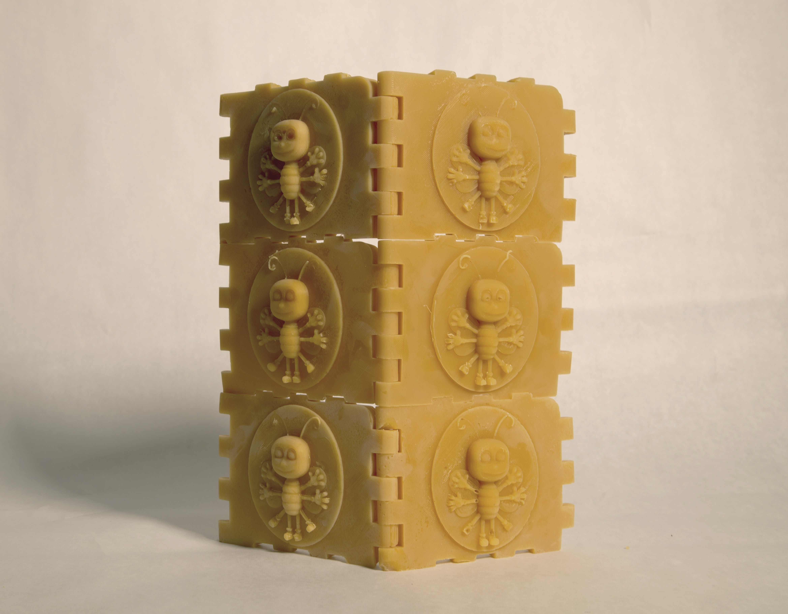
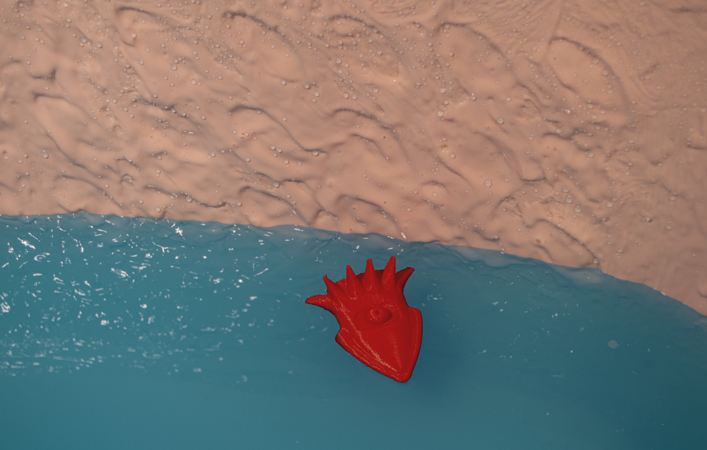

1. September 2020. From my installation "The Gut Brain (Jackson Pollock, Count Drakula, and Tarkovsky's Dog)". Jackson Pollock contemplates the limits of the subconcious as he watches Pixar's Inside Out.
2. March 2020. The exhibit is encircled by a wall of tiny beeswax blocks. The insignia on each block resembles an anthropomorphized bee in the stance of Leonardo’s ‘Vitruvian Man’. Like how ‘Vitruvian Man’ signified an architecture of the male body, these ‘Vitruvian Bees’ signify an architecture of anthropomorphized bees.

3. April 2020. A bouldering performance took place atop a pair of 1,725LB ‘Verti-blocks’. ‘Verti-blocks’ are used to construct retaining walls which redistribute land. In the city, their backside is concealed with dirt while their front appears indistinguishable from natural stone. They manipulate physical space while reconstituting our material-perception of Nature. The climber experiences no sublime as he perpetually clambers over this ‘simulation of nature’, his actions fail to bring him anywhere other than the place he already knows.
4. April 2020. "Gatorade Vessel with Giant Squid" Laundry Basket, Pigmented Silicone Rubber, Gatorade (Glacier Freeze), 3D Print.

5. April 2020. UNFINISHED: "A". Letter A is cast in crystalized honey, screws drilled into surface. Letter A melts over the course of the exhibition.

6. April 2020. PROPOSAL: In the center of the room, there is a statue of two greyhounds plated in stainless steel. Each has a positive/negative review from Greyhound Bus engraved on its spine. One caresses the ear of the other. Greyhounds.
7. May, 2019. From my installation "The Grand Shephard". "Neo-Sheep", cast Bronze.
8. March, 2019. "THE HUMMINGBIRD REPRESENTS LOVE", PLA plastic and graphed screenshot from a Hummingbird documentary.
9. March, 2019. "Broodcomb", cast bronze, honey, rubber tubing.